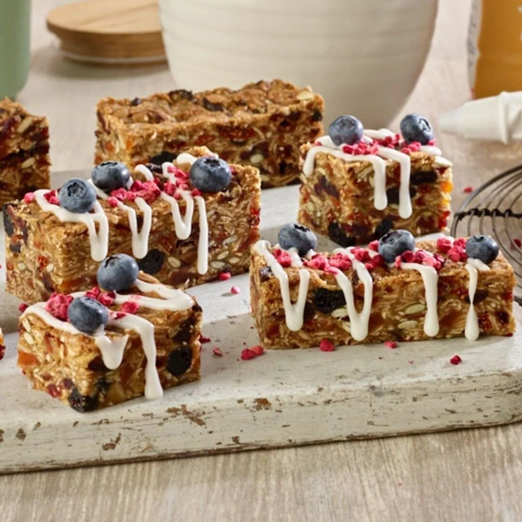

snack
Muesli Bars
Chewy, Baked Snack Cereal Bars
A snack made with oats, nuts, seeds, and dried fruits, tied together with golden syrup and baked into a delicious slice.
What You'll Need
Ingredients
Muesli Bars
- 125g butter
- ½ cup raw sugar
- ¼ cup golden syrup
- 1 cup rolled oats
- ¼ cup blueberries
- ¼ cup raspberries
- ½ cup dried cranberries
- ½ cup dried apricot, chopped
- ½ cup self-raising flour
- 3 Tbsp pumpkin seeds
- 1 Tbsp sesame or chia seeds
Yoghurt Drizzle
- 1 cup icing sugar
- 1 Tbsp natural yoghurt
- ½ tsp lemon juice
To Decorate
- Freeze-dried raspberries
- Shredded coconut
- Fresh blueberries
Time To Cook
Method
Making the Slice
Preheat the oven to 180°C.
Grease and line a 20cm x 30cm slice tray with baking paper.
Combine the butter, sugar and golden syrup in a small saucepan over low heat.
Stir until the butter has melted.
Place the oats, berries, dried fruits, seeds and flour into a large mixing bowl and stir to combine.
Add the melted butter and syrup mixture to the oat mixture and combine.
Press the mixture firmly into the prepared slice tin.
Bake for 20-25 minutes, or until golden.
Allow the slice to cool completely in the tin before cutting.
Yoghurt Drizzle
Mix the icing sugar, yoghurt and lemon juice together until smooth.
Drizzle over the cooled slice.
Decorate with freeze-dried raspberries, coconut and fresh blueberries if desired.
Source & Credits
Recipe & Image Credits
Recipe & Image Source
Chelsea Sugar
This Muesli Bars recipe and the images used on this page were originally publish by Chelsea Sugar.
View Original Recipe & ImagesRecipe creators and image sources are credited to acknowledge the original creators of the content used on this page.